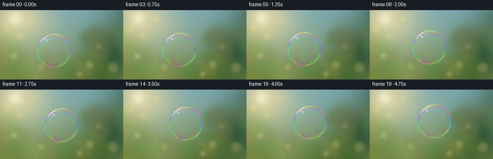
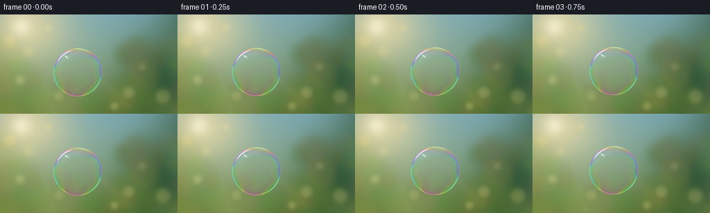

CODING AGENTS AS PIXEL WORLD MODELS
traex/GPT-6.1-Sol · phygen_082
点击播放 · 原生 RGB 像素
逐轮保存的候选
回放视频、检查图与代码变化。
每份候选均可单独播放。实际图片检查记录在下方工具轨迹中。
候选 01播放与检查图
点击播放 · 原生 RGB 像素


展开代码变化
--- 上一保存版本
+++ 本次保存版本
@@ -0,0 +1,147 @@
+"""Render a sunlit floating soap bubble with analytic optics and defocused foliage."""
+from pathlib import Path
+import json
+import numpy as np
+from PIL import Image, ImageFilter
+import artifact_io
+
+ROOT = Path(__file__).resolve().parent
+SPEC = json.loads((ROOT / 'task_spec.json').read_text())
+W,H,N = SPEC['width'], SPEC['height'], SPEC['frames']
+S = 4
+WW, HH = W*S,H*S
+Y,X = np.mgrid[0:HH,0:WW].astype(np.float32)
+X=(X+.5)/S; Y=(Y+.5)/S
+rng=np.random.default_rng(820)
+
+def blend(canvas,color,alpha):
+ return canvas*(1-alpha[...,None])+np.asarray(color,dtype=np.float32)*alpha[...,None]
+
+def background():
+ # An out-of-focus sunlit garden, with open blue sky and warm backlit leaves.
+ sky=np.empty((HH,WW,3),np.float32)
+ a=np.clip(Y/H,0,1)[...,None]
+ sky[:]=np.array([125,172,182])*(1-a)+np.array([139,154,91])*a
+ broad=[(238,90,69,(37,80,54),.83),(213,151,74,(40,81,41),.83),
+ (35,156,62,(91,115,48),.75),(-25,88,58,(120,146,62),.5),
+ (155,160,66,(76,101,47),.72),(276,14,64,(67,106,81),.71)]
+ for cx,cy,r,c,opacity in broad:
+ d=((X-cx)**2+(Y-cy)**2)/(r*r)
+ sky=blend(sky,c,np.exp(-d*1.7)*opacity)
+ # Soft foliage clusters; varying defocus preserves the photographic depth cue.
+ for _ in range(95):
+ cx=rng.uniform(-25,280); cy=rng.uniform(43,180)
+ r=rng.uniform(5,26)
+ if 62<cx<172 and cy<104: continue
+ col=np.array([rng.uniform(64,151),rng.uniform(96,154),rng.uniform(40,95)])
+ if cx<85: col += np.array([24,22,5])
+ d=np.sqrt((X-cx)**2+(Y-cy)**2)
+ alpha=1/(1+np.exp(np.clip((d-r)/rng.uniform(2.8,7),-50,50)))
+ sky=blend(sky,col,alpha*rng.uniform(.14,.38))
+ # Wide, hazy sunlight enters from above-left.
+ glow=np.exp(-(((X-35)/70)**2+((Y-17)/57)**2))
+ sky=blend(sky,(254,230,167),glow*.74)
+ core=np.exp(-(((X-31)/14)**2+((Y-17)/14)**2))
+ sky=blend(sky,(255,251,220),core*.72)
+ for cx,cy,r,opacity in [(14,38,8,.28),(41,54,7,.22),(70,19,5,.25),(29,95,6,.30),
+ (186,113,8,.23),(205,76,5,.16),(235,119,10,.2),
+ (165,133,5,.3),(85,118,7,.19)]:
+ dist=np.sqrt((X-cx)**2+(Y-cy)**2)
+ disk=1/(1+np.exp(np.clip((dist-r)/1.3,-50,50)))
+ sky=blend(sky,(249,231,154),disk*opacity)
+ # Subtle shafts of light, intentionally very subdued and unfocused.
+ for off, width in [(1,.07),(.29,.035)]:
+ slope=(X-30)/(Y+22)
+ ray=np.exp(-((slope-off)/width)**2)*np.clip(Y/170,0,1)
+ sky=blend(sky,(250,234,184),ray*.045)
+ img=Image.fromarray(np.uint8(np.clip(sky,0,255))).filter(ImageFilter.GaussianBlur(1.7*S))
+ return np.asarray(img).astype(np.float32)
+
+BG=background()
+
+def bilinear(img,x,y):
+ xx=np.clip(x*S-.5,0,WW-1.001); yy=np.clip(y*S-.5,0,HH-1.001)
+ ix=xx.astype(np.int32); iy=yy.astype(np.int32)
+ fx=(xx-ix)[...,None]; fy=(yy-iy)[...,None]
+ return (img[iy,ix]*(1-fx)*(1-fy)+img[iy,ix+1]*fx*(1-fy)+
+ img[iy+1,ix]*(1-fx)*fy+img[iy+1,ix+1]*fx*fy)
+
+
+def render(t):
+ # Smooth low-speed buoyant drift, with a slight air-current sway.
+ cx=112+5.0*t+2.3*np.sin(.83*t)
+ cy=84-3.7*t+1.0*np.sin(1.15*t)
+ radius=34.8*(1+.004*np.sin(t*1.1))
+ u=(X-cx)/radius; v=(Y-cy)/radius
+ rho=np.sqrt(u*u+v*v)
+ ang=np.arctan2(v,u)
+ mask=np.clip((1-rho)*radius*S+.5,0,1)
+ rr=np.clip(rho,0,1)
+ z=np.sqrt(np.maximum(0,1-rr*rr))
+ # The thin shell preserves almost all of the scene through its center.
+ # Its two curved interfaces introduce only a small peripheral distortion.
+ distortion=.018+.045*rr**5
+ transmitted=bilinear(BG,cx+(X-cx)*(1-distortion),cy+(Y-cy)*(1-distortion))
+ # Reflection of the open sky and the garden on the spherical film.
+ ny=2*v*z
+ sky_part=1/(1+np.exp(np.clip(9*(ny+.06),-35,35)))
+ environment=np.array([62,88,47],np.float32)[None,None,:]*(1-sky_part[...,None])+np.array([170,208,225])[None,None,:]*sky_part[...,None]
+ foliage_wave=(np.sin(14*u+3*v)+np.sin(23*u-7*v))*.5
+ environment+=((1-sky_part)*foliage_wave*8)[...,None]
+ fresnel=.012+.36*(1-z)**3
+ shell=transmitted*(1-fresnel[...,None])+environment*fresnel[...,None]
+
+ # Thin-film optical interference: the color changes with viewing angle,
+ # slowly draining film thickness, and smooth internal circulating currents.
+ thickness=390+150*(v+.8)+34*np.sin(4.3*u+2.6*v+.30*t)+21*np.sin(8*v-2*u-.42*t)
+ cosfilm=np.sqrt(np.maximum(.01,1-(rr/1.333)**2))
+ phase=4*np.pi*1.333*thickness*cosfilm
+ waves=np.array([650,530,450],dtype=np.float32)
+ interference=.5+.5*np.cos(phase[...,None]/waves+np.array([.12,0,.15]))
+ interference=interference/np.maximum(interference.max(axis=-1,keepdims=True),.24)
+ # Tint is minimal in the middle and strongest in the grazing-angle band.
+ film_strength=.014+.17*rr**6+.13*rr**18
+ color=40+interference*215
+ shell=blend(shell,color,film_strength)
+ # Broad, barely visible curved reflection in the upper hemisphere.
+ sky_arc=np.exp(-((rho-.78)/.12)**2)*np.exp(-((ang+1.93)/.66)**2)
+ shell=blend(shell,(201,227,235),sky_arc*.14)
+
+ # A delicate rainbow rim, not an opaque outline.
+ rim=np.exp(-((rho-.986)/(0.47/radius))**2)
+ rimcolors=90+165*interference
+ shell=blend(shell,rimcolors,rim*.63)
+ fine=np.exp(-((rho-.999)/(0.17/radius))**2)
+ shell=blend(shell,(233,241,232),fine*.49)
+ # Curved reflection of the sun along the upper-left surface.
+ arcangle=np.arctan2(np.sin(ang+2.24),np.cos(ang+2.24))
+ crescent=np.exp(-((rho-.944)/.023)**2)*np.exp(-(arcangle/.39)**4)
+ shell=blend(shell,(255,254,237),crescent*.88)
+ softcrescent=np.exp(-((rho-.927)/.044)**2)*np.exp(-(arcangle/.48)**4)
+ shell += (softcrescent*.035)[...,None]*np.array([220,225,195])
+ # Small elongated window/sun reflection, smoothly following the sphere.
+ hu=u+.46; hv=v+.64
+ a=hu*.80+hv*.60; b=-hu*.60+hv*.80
+ highlight=np.exp(-((a/.11)**2+(b/.030)**2)*2)
+ shell=blend(shell,(255,255,249),highlight*.90)
+ highlight_halo=np.exp(-((a/.16)**2+(b/.067)**2)*2)
+ shell+=highlight_halo[...,None]*np.array([9,9,8])
+ # Weak, cool secondary glint on the opposite lip.
+ opposite=np.arctan2(np.sin(ang-.69),np.cos(ang-.69))
+ secondary=np.exp(-((rho-.976)/.017)**2)*np.exp(-(opposite/.30)**2)
+ shell=blend(shell,(183,249,236),secondary*.48)
+ frame=BG*(1-mask[...,None])+shell*mask[...,None]
+ # Minute optical bloom around the sun's reflection, no artificial sparkle.
+ sunrim=np.exp(-(((X-(cx-.68*radius))/1.8)**2+((Y-(cy-.70*radius))/1.8)**2))
+ frame+=sunrim[...,None]*np.array([8,8,6])
+ # Camera tone and a restrained vignette.
+ vignette=1-.085*((X-W*.45)/(W*.75))**2-.055*((Y-H*.48)/(H*.85))**2
+ frame*=vignette[...,None]
+ im=Image.fromarray(np.uint8(np.clip(frame,0,255)))
+ im=im.resize((W,H),Image.Resampling.LANCZOS)
+ return np.asarray(im)
+
+if __name__=='__main__':
+ frames=np.stack([render(i/SPEC['fps']) for i in range(N)])
+ artifact_io.save(frames,ROOT)
+ print(f'Saved {len(frames)} RGB frames at {W}x{H}.')
可观测工具轨迹
实际执行的命令与返回图片。
命令 1exit 0
/bin/bash -lc "ls -la && cat prompt.txt && printf '\\n---RULES---\\n' && cat GENERATION_RULES.md && printf '\\n---SPEC---\\n' && cat task_spec.json"
命令 2exit 0
/bin/bash -lc "cat artifact_io.py && python - <<'PY'
import numpy, PIL
print('numpy',numpy.__version__,'PIL',PIL.__version__)
PY"命令 3exit 0
/bin/bash -lc "cat > generate.py <<'PY'
\"\"\"Render a sunlit floating soap bubble with analytic optics and defocused foliage.\"\"\"
from pathlib import Path
import json
import numpy as np
from PIL import Image, ImageFilter
import artifact_io
ROOT = Path(__file__).resolve().parent
SPEC = json.loads((ROOT / 'task_spec.json').read_text())
W,H,N = SPEC['width'], SPEC['height'], SPEC['frames']
S = 4
WW, HH = W*S,H*S
Y,X = np.mgrid[0:HH,0:WW].astype(np.float32)
X=(X+.5)/S; Y=(Y+.5)/S
rng=np.random.default_rng(820)
def blend(canvas,color,alpha):
return canvas*(1-alpha[...,None])+np.asarray(color,dtype=np.float32)*alpha[...,None]
def background():
# An out-of-focus sunlit garden, with open blue sky and warm backlit leaves.
sky=np.empty((HH,WW,3),np.float32)
a=np.clip(Y/H,0,1)[...,None]
sky[:]=np.array([125,172,182])*(1-a)+np.array([139,154,91])*a
broad=[(238,90,69,(37,80,54),.83),(213,151,74,(40,81,41),.83),
(35,156,62,(91,115,48),.75),(-25,88,58,(120,146,62),.5),
(155,160,66,(76,101,47),.72),(276,14,64,(67,106,81),.71)]
for cx,cy,r,c,opacity in broad:
d=((X-cx)**2+(Y-cy)**2)/(r*r)
sky=blend(sky,c,np.exp(-d*1.7)*opacity)
# Soft foliage clusters; varying defocus preserves the photographic depth cue.
for _ in range(95):
cx=rng.uniform(-25,280); cy=rng.uniform(43,180)
r=rng.uniform(5,26)
if 62<cx<172 and cy<104: continue
col=np.array([rng.uniform(64,151),rng.uniform(96,154),rng.uniform(40,95)])
if cx<85: col += np.array([24,22,5])
d=np.sqrt((X-cx)**2+(Y-cy)**2)
alpha=1/(1+np.exp(np.clip((d-r)/rng.uniform(2.8,7),-50,50)))
sky=blend(sky,col,alpha*rng.uniform(.14,.38))
# Wide, hazy sunlight enters from above-left.
glow=np.exp(-(((X-35)/70)**2+((Y-17)/57)**2))
sky=blend(sky,(254,230,167),glow*.74)
core=np.exp(-(((X-31)/14)**2+((Y-17)/14)**2))
sky=blend(sky,(255,251,220),core*.72)
for cx,cy,r,opacity in [(14,38,8,.28),(41,54,7,.22),(70,19,5,.25),(29,95,6,.30),
(186,113,8,.23),(205,76,5,.16),(235,119,10,.2),
(165,133,5,.3),(85,118,7,.19)]:
dist=np.sqrt((X-cx)**2+(Y-cy)**2)
disk=1/(1+np.exp(np.clip((dist-r)/1.3,-50,50)))
sky=blend(sky,(249,231,154),disk*opacity)
# Subtle shafts of light, intentionally very subdued and unfocused.
for off, width in [(1,.07),(.29,.035)]:
slope=(X-30)/(Y+22)
ray=np.exp(-((slope-off)/width)**2)*np.clip(Y/170,0,1)
sky=blend(sky,(250,234,184),ray*.045)
img=Image.fromarray(np.uint8(np.clip(sky,0,255))).filter(ImageFilter.GaussianBlur(1.7*S))
return np.asarray(img).astype(np.float32)
BG=background()
def bilinear(img,x,y):
xx=np.clip(x*S-.5,0,WW-1.001); yy=np.clip(y*S-.5,0,HH-1.001)
ix=xx.astype(np.int32); iy=yy.astype(np.int32)
fx=(xx-ix)[...,None]; fy=(yy-iy)[...,None]
return (img[iy,ix]*(1-fx)*(1-fy)+img[iy,ix+1]*fx*(1-fy)+
img[iy+1,ix]*(1-fx)*fy+img[iy+1,ix+1]*fx*fy)
def render(t):
# Smooth low-speed buoyant drift, with a slight air-current sway.
cx=112+5.0*t+2.3*np.sin(.83*t)
cy=84-3.7*t+1.0*np.sin(1.15*t)
radius=34.8*(1+.004*np.sin(t*1.1))
u=(X-cx)/radius; v=(Y-cy)/radius
rho=np.sqrt(u*u+v*v)
ang=np.arctan2(v,u)
mask=np.clip((1-rho)*radius*S+.5,0,1)
rr=np.clip(rho,0,1)
z=np.sqrt(np.maximum(0,1-rr*rr))
# The thin shell preserves almost all of the scene through its center.
# Its two curved interfaces introduce only a small peripheral distortion.
distortion=.018+.045*rr**5
transmitted=bilinear(BG,cx+(X-cx)*(1-distortion),cy+(Y-cy)*(1-distortion))
# Reflection of the open sky and the garden on the spherical film.
ny=2*v*z
sky_part=1/(1+np.exp(np.clip(9*(ny+.06),-35,35)))
environment=np.array([62,88,47],np.float32)[None,None,:]*(1-sky_part[...,None])+np.array([170,208,225])[None,None,:]*sky_part[...,None]
foliage_wave=(np.sin(14*u+3*v)+np.sin(23*u-7*v))*.5
environment+=((1-sky_part)*foliage_wave*8)[...,None]
fresnel=.012+.36*(1-z)**3
shell=transmitted*(1-fresnel[...,None])+environment*fresnel[...,None]
# Thin-film optical interference: the color changes with viewing angle,
# slowly draining film thickness, and smooth internal circulating currents.
thickness=390+150*(v+.8)+34*np.sin(4.3*u+2.6*v+.30*t)+21*np.sin(8*v-2*u-.42*t)
cosfilm=np.sqrt(np.maximum(.01,1-(rr/1.333)**2))
phase=4*np.pi*1.333*thickness*cosfilm
waves=np.array([650,530,450],dtype=np.float32)
interference=.5+.5*np.cos(phase[...,None]/waves+np.array([.12,0,.15]))
interference=interference/np.maximum(interference.max(axis=-1,keepdims=True),.24)
# Tint is minimal in the middle and strongest in the grazing-angle band.
film_strength=.014+.17*rr**6+.13*rr**18
color=40+interference*215
shell=blend(shell,color,film_strength)
# Broad, barely visible curved reflection in the upper hemisphere.
sky_arc=np.exp(-((rho-.78)/.12)**2)*np.exp(-((ang+1.93)/.66)**2)
shell=blend(shell,(201,227,235),sky_arc*.14)
# A delicate rainbow rim, not an opaque outline.
rim=np.exp(-((rho-.986)/(0.47/radius))**2)
rimcolors=90+165*interference
shell=blend(shell,rimcolors,rim*.63)
fine=np.exp(-((rho-.999)/(0.17/radius))**2)
shell=blend(shell,(233,241,232),fine*.49)
# Curved reflection of the sun along the upper-left surface.
arcangle=np.arctan2(np.sin(ang+2.24),np.cos(ang+2.24))
crescent=np.exp(-((rho-.944)/.023)**2)*np.exp(-(arcangle/.39)**4)
shell=blend(shell,(255,254,237),crescent*.88)
softcrescent=np.exp(-((rho-.927)/.044)**2)*np.exp(-(arcangle/.48)**4)
shell += (softcrescent*.035)[...,None]*np.array([220,225,195])
# Small elongated window/sun reflection, smoothly following the sphere.
hu=u+.46; hv=v+.64
a=hu*.80+hv*.60; b=-hu*.60+hv*.80
highlight=np.exp(-((a/.11)**2+(b/.030)**2)*2)
shell=blend(shell,(255,255,249),highlight*.90)
highlight_halo=np.exp(-((a/.16)**2+(b/.067)**2)*2)
shell+=highlight_halo[...,None]*np.array([9,9,8])
# Weak, cool secondary glint on the opposite lip.
opposite=np.arctan2(np.sin(ang-.69),np.cos(ang-.69))
secondary=np.exp(-((rho-.976)/.017)**2)*np.exp(-(opposite/.30)**2)
shell=blend(shell,(183,249,236),secondary*.48)
frame=BG*(1-mask[...,None])+shell*mask[...,None]
# Minute optical bloom around the sun's reflection, no artificial sparkle.
sunrim=np.exp(-(((X-(cx-.68*radius))/1.8)**2+((Y-(cy-.70*radius))/1.8)**2))
frame+=sunrim[...,None]*np.array([8,8,6])
# Camera tone and a restrained vignette.
vignette=1-.085*((X-W*.45)/(W*.75))**2-.055*((Y-H*.48)/(H*.85))**2
frame*=vignette[...,None]
im=Image.fromarray(np.uint8(np.clip(frame,0,255)))
im=im.resize((W,H),Image.Resampling.LANCZOS)
return np.asarray(im)
if __name__=='__main__':
frames=np.stack([render(i/SPEC['fps']) for i in range(N)])
artifact_io.save(frames,ROOT)
print(f'Saved {len(frames)} RGB frames at {W}x{H}.')
PY
python generate.py"命令 4exit 0
/bin/bash -lc "python - <<'PY'
from pathlib import Path
import numpy as np
from PIL import Image
p=np.load('pixels.npz')['pixels']
imgs=list(Path('frames').glob('*.png'))
assert p.shape==(144,256,20)
assert len(imgs)==20
assert all(Image.open(x).size==(256,144) for x in imgs)
assert Path('index.html').is_file()
print('Verified: 20 frames, 256Ã144 RGB; pixel archive and video player exist.')
PY
command -v ffmpeg || true
ls -lh pixels.npz index.html inspection.png generate.py"保存候选 1 份；完成命令 4 次；可验证图片返回 0 张。原始 API 响应与完整日志保留在本地。